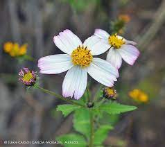
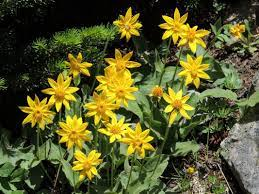
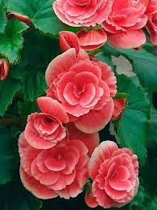
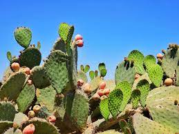
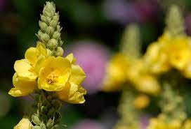

¿Cuál es la importancia del agua de lluvia en la preservación de la biodiversidad
en Canatlán?
El agua de lluvia en Canatlán es ideal para la irrigación de los jardines y cultivos.
Al recolectarla, se reduce el caudal del alcantarillado pluvial, evitando así el ingreso
de altos volúmenes a los sistemas de tratamiento de aguas residuales.
Con la recolección y reutilización del agua de lluvia de esta contribuyendo con la ecología
y los bigares funcionarían de manera sustentable.
Una de las ventajas de la captación de agua pluvial es el que reduce un ahorro en el consumo
de agua del servicio público, también repercute en el aspecto económico y beneficios en el
medio ambiente, aprendemos a cuidar los recursos naturales y disminuye el uso de químicos que
se usan para el agua de red pública.
Algunas de las plantas que se pueden encontrar en tiempos de lluvia son:

Aceitilla

Árnica

Begonia

Nopal

Gordolobo